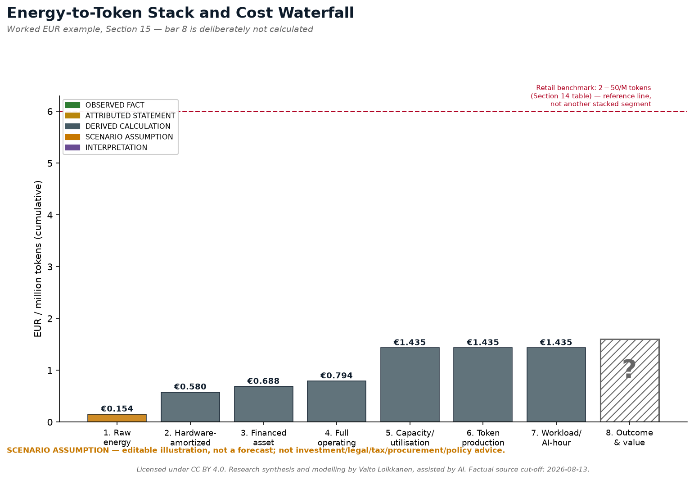
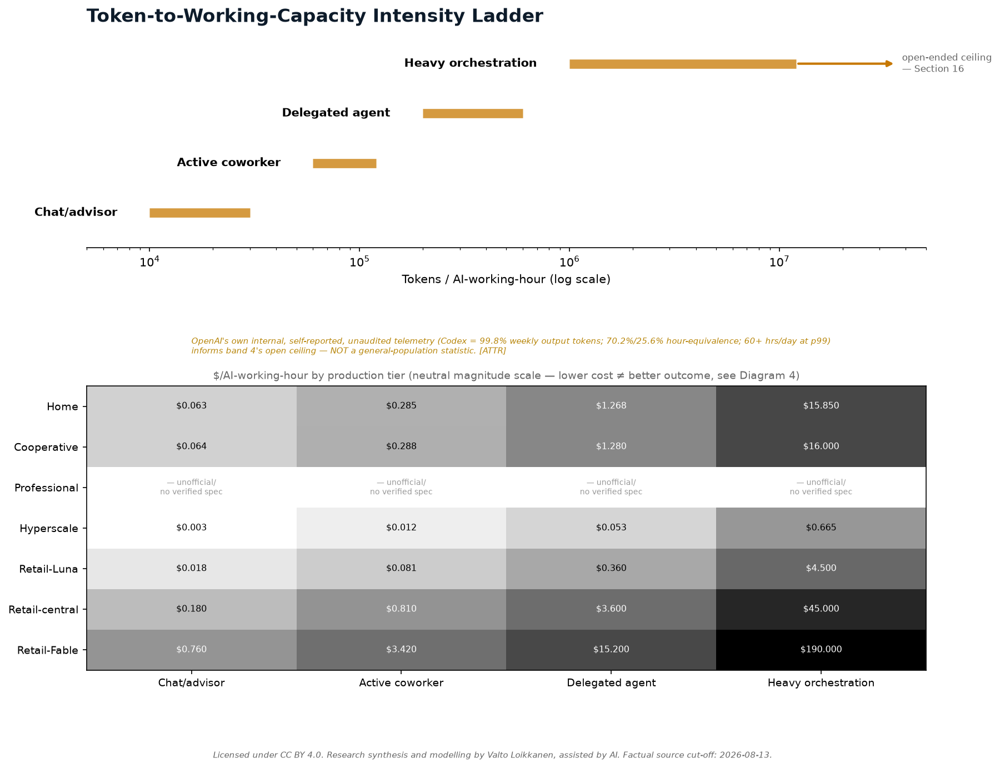
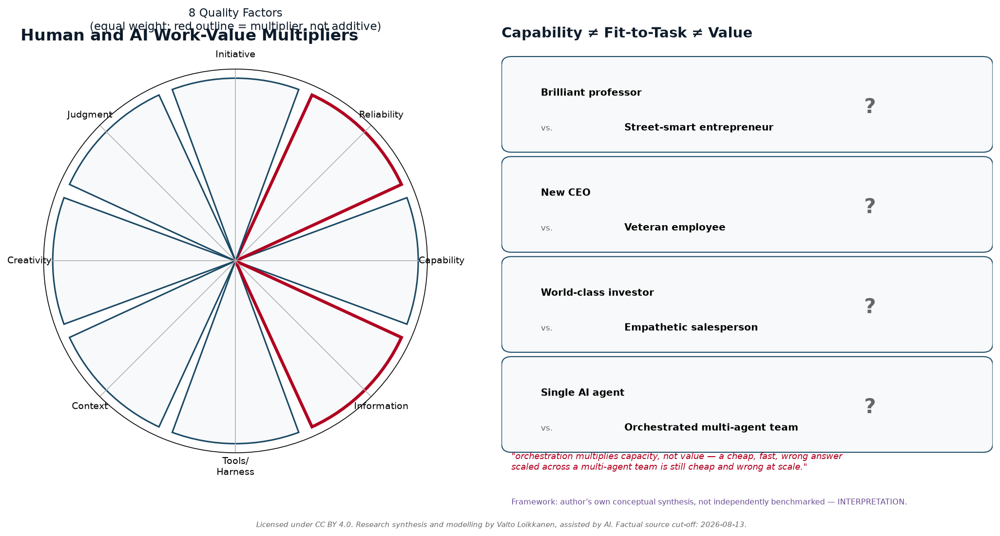
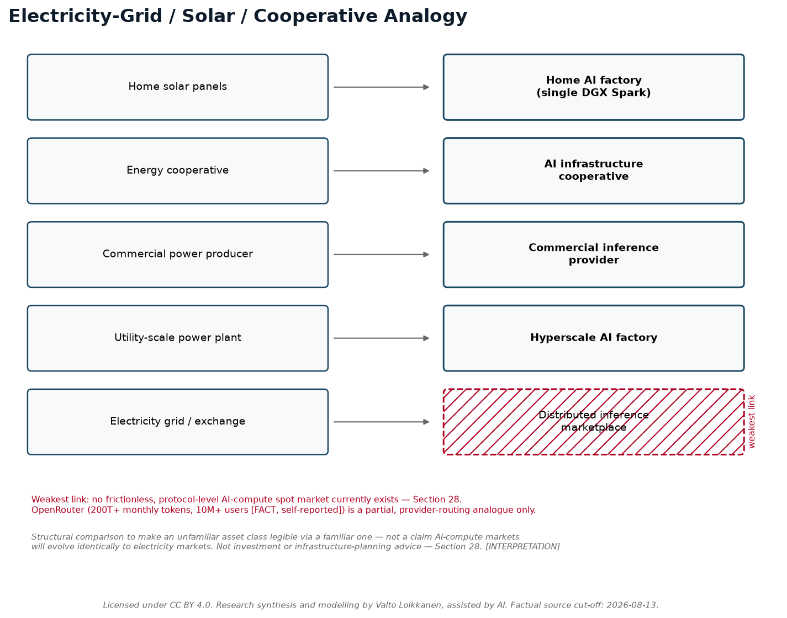

Diagrams
All 11 diagrams from the research package, in order. Full structural specifications (what each diagram shows, evidence-class labeling, and design rules) are in the Visual Asset Briefs.






